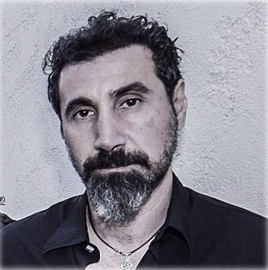
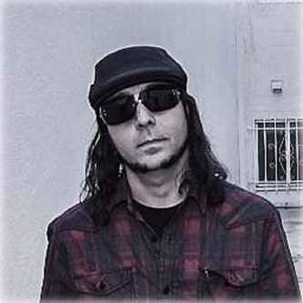

COMIENZOS Y LOGROS
System of a Down (también por su acrónimo, SOAD) es una banda de rock estadounidense de ascendencia armenia, formada en Glendale, California, en el año 1994.

Son conocidos por realizar canciones en cuyas letras se manifiestan en contra del maltrato infantil, la violencia, la guerra, los genocidios, la pornografía, el machismo, el predominio del consumismo en la sociedad, las desigualdades sociales, físicas e ideológicas, la intolerancia o la discriminación, entre otros. Esta fórmula social y musical le ha acarreado, desde la publicación de su primer álbum en 1998, buenos resultados ante el público, que hizo de System of a Down un disco de platino.
En 1994, tras la ruptura de Soil (antigua banda donde participaban Tankian y Malakian), Tankian, Odadjian y Malakian formaron una nueva banda, junto a Ontronik Khachaturian, un viejo amigo de Malakian y Odadjian, que había tocado con Malakian en una banda llamada Snowblind durante su adolescencia. Luego la banda tendría como nombre «Victims of a Down» por un poema escrito por Malakian. La palabra «Victims» fue cambiada por «System» ya que Odadjian pensó en que la alteración podría atraer a un público mucho más amplio.
La primera grabación de la banda se cree que fue un demo que contenía dos canciones: Flake y Toast. El primer demo no oficial es conocido como "The Untitled Demo Tape", que contenía los temas P.I.G. (demo de Mr. Jack), la primera versión de The Metro (cover del grupo Berlin), Flake y Toast. Otros temas que también se cree que fueron grabados en ese tiempo son Roulette, 36 y X, que después serían usados en lanzamientos oficiales de System, además de Friik, Blue, Storaged y Marmalade.
En 1995 la banda lanzó su primer demo oficial, este tenía muy baja calidad y sólo era vendido en sus presentaciones. El demo contenía Dam, Sugar, Suite-Pee y P.L.U.C.K., estas tres últimas fueron utilizadas en el primer álbum homónimo de la banda. La banda seguía dando conciertos y escribiendo nuevo material, y en 1996 salió a la luz su segundo demo. Este tenía mucha mejor calidad que el anterior, y contenía las canciones Honey, Temper y Soil. La última fue utilizada para el primer álbum en 1998, las otras dos nunca fueron regrabadas, pero existen diversas versiones en vivo. En 1997 la banda grabó su tercer demo, que contenía Peephole, Know y War. Existe otra versión promocional de este demo, que estuvo a la venta sólo unos días y muy poca gente compró. La diferencia es que este demo contenía una canción más, que no había sido listada, al parecer durante la grabación del demo fue como una "improvisación". Esta canción se filtró en Internet apenas en 2009, cuando un fan la descubrió y decidió compartir la noticia. La canción es conocida como "The Missing Song".
Es la primera banda desde The Beatles que ha alcanzado dos veces la cima de ventas de álbumes en Estados Unidos en el mismo año, con Mezmerize e Hypnotize, en el año 2005.System of a Down ha vendido más de 40 millones de discos en todo el mundo.
INTEGRANTES
Serj Tankian
Serj Tankian (Beirut, Líbano, 21 de agosto de 1967) es un músico multiinstrumentista, cantante, compositor, productor musical, pintor, poeta y activista libanés de ascendencia armenia, conocido por ser el vocalista principal y compositor de la banda System of a Down.
Durante su carrera artística, Tankian con System of a Down, ha lanzado cinco álbumes de estudio. También realizó un álbum junto a Arto Tunçboyacıyan, titulado Serart y en su etapa como solista, ha lanzado al mercado cinco álbumes de estudio. Además, fundó el sello discográfico Serjical Strike Records en 2001.
Serj figura en el puesto 26 en la lista Los 100 mejores vocalistas del metal de todos los tiempos, según la revista estadounidense Hit Parader.
Daron Malakian
Daron Vartan Malakian (18 de julio de 1975, Los Ángeles) es un músico estadounidense de origen armenio, conocido por ser el guitarrista, compositor y segunda voz de la banda de rock System of a Down. Malakian también es el vocalista principal, guitarrista y compositor de la banda Scars on Broadway. Está en el puesto 30 en la lista de Los mejores 100 guitarristas del metal de todos los tiempos de la revista Guitar World
Shavo Odadjian
Shavarsh "Shavo" Odadjian (Ereván, Armenia, 22 de abril de 1974), es un músico armenio, conocido principalmente por ser el bajista de la banda System of a Down.
Aparte de trabajar en un banco, también comenzó a trabajar como manager y luego como bajista en 1993 con la banda Soil, en la que estaban Malakian, Tankian y otros amigos, después de conocerlos en un estudio de grabación. En 1995 Shavo, junto a Tankian y Malakian deciden formar la banda System of a Down. La banda originalmente se llamaría Victims of a Down, nombre de un poema escrito por Daron Malakian, pero Odajian cambió Victims por System. La banda ha declarado que ellos también cambiaron la palabra "Victims" por "System" para que sus CD fuesen colocados en las tiendas junto a su banda favorita, Slayer.
Odadjian toca el bajo en System of a Down, y también canta coros en vivo. Su estilo habitual de tocar el bajo es con un plectro, a pesar de que también se ha visto tocar con sus dedos durante ciertas canciones. Odadjian ha escrito también varias canciones de System of a Down, entre ellas "Toxicity", "Sugar", "Jet-Pilot", "Bounce", "Mind", "Dreaming", y "U Fig". Ha dirigido la mayoría de los vídeos musicales de la banda, y es responsable de la escenografía y la iluminación para cada una de sus presentaciones en vivo
John Dolmayan
John Dolmayan (Beirut, Líbano, 15 de julio de 1973) es un músico libanés de ascendencia armenia naturalizado estadounidense, conocido principalmente por ser el baterista de la banda System of a Down. También posee un proyecto llamado These Grey Men lanzado el año 2020.
Dolmayan primero se interesó en los tambores a la edad de dos años. Su padre era un saxofonista y cuando su madre lo llevaba a ver tocar a su padre, él imitaba al baterista de su padre. Aprendió a tocar la batería poniendo discos y practicando durante horas al día, y continuó practicando durante años. Dolmayan describe su estilo musical influido por todo lo que pudo tener en sus manos, incluidos los álbumes de jazz pertenecientes a su padre y los álbumes de rock que compartió con sus amigos.
Discografia
Álbumes de estudio
- 1998: System of a Down
- 2001: Toxicity
- 2002: Steal This Album!
- 2005: Mezmerize
- 2005: Hypnotize
Demos
- 1995: Untitled 1995 Demo
- 1995: Demo Tape 1
- 1996: Demo Tape 2
- 1997: Demo Tape 3
- 1997: Demo Tape 4